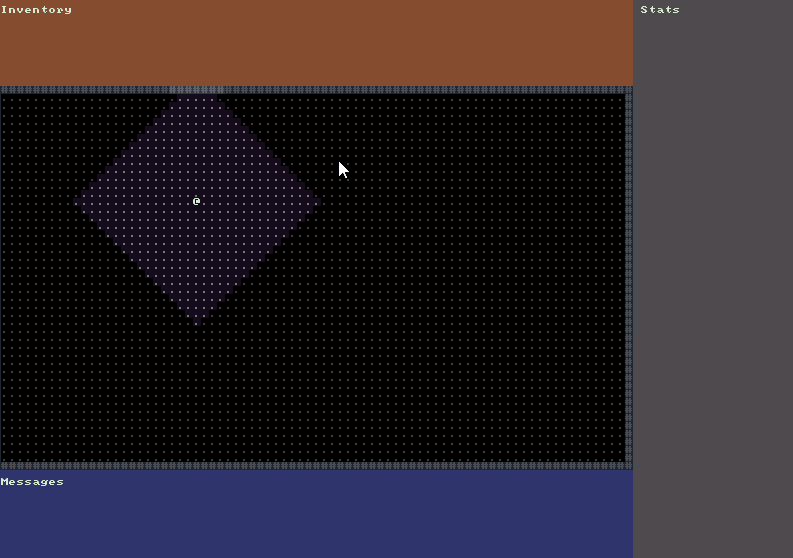

Player Input
During this tutorial we’ll handle keyboard input and allow moving the Player around the screen. We’ll update the field-of-view as the Player moves and make sure that walls cannot be walked through.

Small Refactoring
Before starting on new code I noticed two things that should have been cleaned up in the last tutorial. The first was that in our OnRootConsoleUpdate() method in Game.cs we were still setting the background color and printing a message to _mapConsole. Immediately after doing this we overwrote all that work and drew our real map over it. Basically we were doing extra work that we didn’t need to do so we can delete those lines.
The second thing is that all of the code from OnRootConsoleUpdate() for setting the background color and printing a message to each of the other three consoles is being called on each update. This is also a waste as currently the contents of those consoles never changes. All of that code can be moved to Main() so it will only be executed once when we first start our game.
Although these refactorings are optional and the code will still work without doing them, I find that it is nice to continuously look at what you have written and try to clean it up. Some people call this the “boy scout rule” which is to always leave the code cleaner than you found it.
Creating a Direction Enumeration
Before we start handling the keyboard input it could be nice to create an enumeration of all the possible directions that a player could move. Create a new Enum called Direction.cs in the Core folder of the project. Direction.cs should have the following code in it:
namespace RogueSharpV3Tutorial.Core
{
// Direction values correspond to numpad numbers
public enum Direction
{
None = 0,
DownLeft = 1,
Down = 2,
DownRight = 3,
Left = 4,
Center = 5,
Right = 6,
UpLeft = 7,
Up = 8,
UpRight = 9
}
}
You’ll notice that the enum supports diagonals however in this tutorial game we will only allow the player to move up, down, left and right. At this time RogueSharp is missing diagonal support in it’s pathfinder but that is something that we’re looking into adding.
Setting Actor Positions
Since our DungeonMap class is responsible for knowing which Cells are walkable and it will also keep track of the positions of all of our Actors it seems like a good place to put a method that will move an Actor. Note that currently the Player is defined in the Game class and it is an exception as we want the Player to exist outside of the context of the DungeonMap so that we can regenerate the DungeonMap when moving down into deeper levels
Open DungeonMap.cs and add the following methods to it:
// Returns true when able to place the Actor on the cell or false otherwise
public bool SetActorPosition( Actor actor, int x, int y )
{
// Only allow actor placement if the cell is walkable
if ( GetCell( x, y ).IsWalkable )
{
// The cell the actor was previously on is now walkable
SetIsWalkable( actor.X, actor.Y, true );
// Update the actor's position
actor.X = x;
actor.Y = y;
// The new cell the actor is on is now not walkable
SetIsWalkable( actor.X, actor.Y, false );
// Don't forget to update the field of view if we just repositioned the player
if ( actor is Player )
{
UpdatePlayerFieldOfView();
}
return true;
}
return false;
}
// A helper method for setting the IsWalkable property on a Cell
public void SetIsWalkable( int x, int y, bool isWalkable )
{
Cell cell = GetCell( x, y );
SetCellProperties( cell.X, cell.Y, cell.IsTransparent, isWalkable, cell.IsExplored );
}
The SetActorPosition() method runs through a set of steps to make sure that the old cell that the actor was previously on is now walkable, and the new cell the actor is moved to is not walkable. It also updates the player field-of-view if the actor that was moved was the player. The return status here is also important. It returns false if the actor could not be moved. This is necessary when moving the player in case we try to move into a wall or other impassible cell.
The SetIsWalkable() method is really just a helper function so that we don’t have to call SetCellProperties() with so many parameters. In the future I think these helpers might be added directly to the RogueSharp Map class.
Command System
Make a new class in the Systems folder called CommandSystem.cs. The responsibility of this class will be to carry out the commands that the Player executes.
Add the following code to CommandSystem.cs:
public class CommandSystem
{
// Return value is true if the player was able to move
// false when the player couldn't move, such as trying to move into a wall
public bool MovePlayer( Direction direction )
{
int x = Game.Player.X;
int y = Game.Player.Y;
switch ( direction )
{
case Direction.Up:
{
y = Game.Player.Y - 1;
break;
}
case Direction.Down:
{
y = Game.Player.Y + 1;
break;
}
case Direction.Left:
{
x = Game.Player.X - 1;
break;
}
case Direction.Right:
{
x = Game.Player.X + 1;
break;
}
default:
{
return false;
}
}
if ( Game.DungeonMap.SetActorPosition( Game.Player, x, y ) )
{
return true;
}
return false;
}
}
The only method in this class for now is the MovePlayer() method which takes a Direction as a parameter. Based on the direction that is input we add or subtract to the X or Y position of the player. Then we call SetActorPosition() on the player to move them to the new position and return the result. The result will be true if the player is able to move and false otherwise.
Capturing Key Presses
The last class that we’ll need to modify is Game.cs to get everything hooked up.
First of all we need to add a new static member _renderRequired and a new property CommandSystem to the top of the class.
private static bool _renderRequired = true;
public static CommandSystem CommandSystem { get; private set; }
Then in our Main() method we need to instantiate a new CommandSystem
CommandSystem = new CommandSystem();
Next we need to capture the last key pressed and handle it in OnRootConsoleUpdate()
// Event handler for RLNET's Update event
private static void OnRootConsoleUpdate( object sender, UpdateEventArgs e )
{
bool didPlayerAct = false;
RLKeyPress keyPress = _rootConsole.Keyboard.GetKeyPress();
if ( keyPress != null )
{
if ( keyPress.Key == RLKey.Up )
{
didPlayerAct = CommandSystem.MovePlayer( Direction.Up );
}
else if ( keyPress.Key == RLKey.Down )
{
didPlayerAct = CommandSystem.MovePlayer( Direction.Down );
}
else if ( keyPress.Key == RLKey.Left )
{
didPlayerAct = CommandSystem.MovePlayer( Direction.Left );
}
else if ( keyPress.Key == RLKey.Right )
{
didPlayerAct = CommandSystem.MovePlayer( Direction.Right );
}
else if ( keyPress.Key == RLKey.Escape )
{
_rootConsole.Close();
}
}
if ( didPlayerAct )
{
_renderRequired = true;
}
}
RLNET allows us to get the last key pressed by calling Keyboard.GetKeyPress() on the root console. The _renderRequired private member is a bit of an optimization. There is no need to redraw our map if no action was performed and the player didn’t move. Other than that all we are doing is checking if one of the direction keys was pressed and handing it off to the CommandSystem.MovePlayer() method to handle the movement. We also hooked up the Escape key to close the game.
The last step is to wrap our drawing code in OnRootConsoleRender() in an if statement checking _renderRequired so that we don’t redraw all the consoles when nothing has changed.
// Event handler for RLNET's Render event
private static void OnRootConsoleRender( object sender, UpdateEventArgs e )
{
// Don't bother redrawing all of the consoles if nothing has changed.
if ( _renderRequired )
{
// ... previous drawing code remains here
_renderRequired = false;
}
}
Code on GitHub
As always the code for the tutorial series so far can be found on GitHub:
Bored waiting for the next tutorial? The complete tutorial project is already finished and the source code is available on Github:
- Sample Roguelike game using RogueSharp and RLNet console
- Sample Roguelike game using RogueSharp and SadConsole